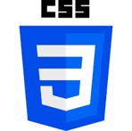

С чего начинает програмист
Языки програмирования
HTML
- Является языком гипертекстовой разметки текста
- Предназначен для размещения на веб-странице
различных элементов: текста, картинок, таблиц аудио и видео
- Создает структуру, обеспечивающую пользователю
легче ориентироваться на сайте
- Язык HTML помогает структурировать информацию
- HTML - язык программирования, с помощью которого
пишутся сайты
- HTML языке разметки, который позволяет браузеру
понимать, как следует отображать пользователю ту или иную
информацию
Подробнее о HTML
В начало

css
- CSS разработан для разграничивания того, что формирует
визуальный вид страницы
- CSS определяет каждый элемент и способ его визуализации
- Создает условия для быстрой и простой разработки,
так как с помощью CSS можно создать единый формат
оформления
для базовых страниц, а не прописывать его многократно
- Улучшает гибкостью редактирования, достаточно внести изменения
в каскадные таблицы стилей, чтобы внешний
вид
необходимых страниц сразу изменился
- Оптимизирует программный код путем снижения объема дублируемых элементов.
Он легче воспринимается
разработчиками и ботами поисковых систем
- Увеличивает скорость загрузки страницы, так как CSS кешируется
при первой сессии, а потом подгружается
только структура
и базовые данные
- Создает условия для простого применения разных визуальных стилей
для созданного документа.
К примеру,
с помощью технологии можно легко внедрить на сайте версии страниц
для людей с плохим зрением или разные
варианты дизайна для мобильных и десктопных устройств
Подробнее о CSS
В начало

JavaScript
JavaScript – это язык программирования, который используют разработчики
для создания интерактивных
веб-страниц
Функции JavaScript могут улучшить удобство взаимодействия пользователя с веб-сайтом:
от обновления ленты
новостей в социальных сетях и до отображения анимации и интерактивных карт
Позволяет создавать динамически обновляемый контент, управлять мультимедиа,
анимировать изображения и делать
многое другое
Запускает код в соответствии с определёнными событиями происходящими на web странице
Подробнее о JavaScript
В начало